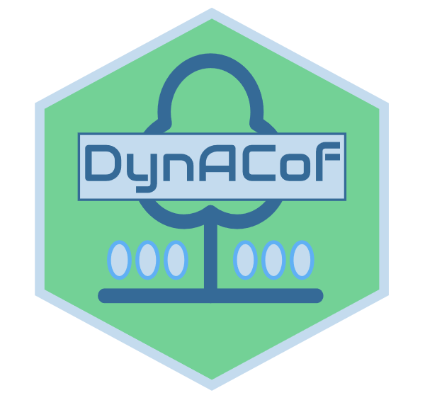

DynACof: The Dynamic Agroforestry Coffee Crop Model 
Overview
The DynACof process-based model computes plot-scale Net Primary Productivity, carbon allocation, growth, yield, energy, and water balance of coffee plantations according to management, while accounting for spatial effects using metamodels from the 3D process-based MAESPA. The model also uses coffee bud and fruit cohorts for reproductive development to better represent fruit carbon demand distribution along the year.
A research article presenting and evaluating the model is published in Vezy et al. (2020). The official website is available here.
DynACof is also available as a Julia package. Use this one for better performance (~100x). Its repository is available here, and the documentation is available here. The Julia version is also available from the R package. See the vignette for more details. Note that the input parameter files are different from the R-version. They are accessible in the DynACof.jl_inputs repository.
Installation
The development version from GitHub can be installed with:
Or using the lightweight remotes package:
The package is tested routinely to pass all CRAN tests using Travis-CI (linux) and AppVeyor (Windows), but is not released to the CRAN servers because we believe DynACof users are not widespread enough to bother CRAN people and use their free server time.
Example
This is a basic example using all defaults (parameters and meteorology) over 2 years :
rm(list = ls())
library("DynACof")
Sys.setenv(TZ="UTC")
DynACof(Period= as.POSIXct(c("1979-01-01", "1980-12-31")))To use your own data, you have to tell DynACof where to find it using Inpath parameter, and what are the file names with the FileName parameter list. A separate Github repository is available for input files templates, and some help on how to proceed.
Example using custom input parameter files:
rm(list = ls())
library("DynACof")
Sys.setenv(TZ="UTC")
DynACof(WriteIt = T, Period = as.POSIXct(c("1979-01-01", "1980-12-31")),
Inpath = "1-Input/Aquiares/", Simulation_Name = "Test1",
FileName = list(Site = "1-Site.R", Meteo ="2-Meteorology.txt",
Soil = "3-Soil.R",Coffee = "4-Coffee.R", Tree = NULL))Note that the Meteo file can be of any regular format because the model uses the data.table::fread function internally.
Notes
The model first computes the shade tree, then the coffee and then the soil. So if you need to update the metamodels, please keep in mind that the state of soil of a given day is only accessible on the next day for the tree and the coffee, unless the code is updated too. The model is implemented like this for simplicity, based on the hypothesis that the soil has a rather slow dynamic compared to plants dynamics.
Code of conduct
Please note that this project is released with a Contributor Code of Conduct. By participating in this project you agree to abide by its terms.
Acknowledgments
The DynACof model was mainly developed thanks to the MACCAC project, which was funded by the french ANR (Agence Nationale de la Recherche). The authors were funded by CIRAD and INRAE. The authors are grateful for the support of the Aquiares farm and the CATIE for the long-term coffee agroforestry trial, the SOERE F-ORE-T which is supported annually by Ecofor, Allenvi and the French national research infrastructure ANAEE-F; the CIRAD-IRD-SAFSE project (France) and the PCP platform of CATIE. CoffeeFlux observatory was supported and managed by CIRAD researchers. We are grateful to the staff from Costa-Rica, in particular Alvaro Barquero, Alejandra Barquero, Jenny Barquero, Alexis Perez, Guillermo Ramirez, Rafael Acuna, Manuel Jara, Alonso Barquero for their technical and field support.
MACACC project: ANR-13-AGRO-0005, Viabilité et Adaptation des Ecosystèmes Productifs, Territoires et Ressources face aux Changements Globaux, AGROBIOSPHERE 2013 program.
The DynACof logo was made using LogoMakr.com